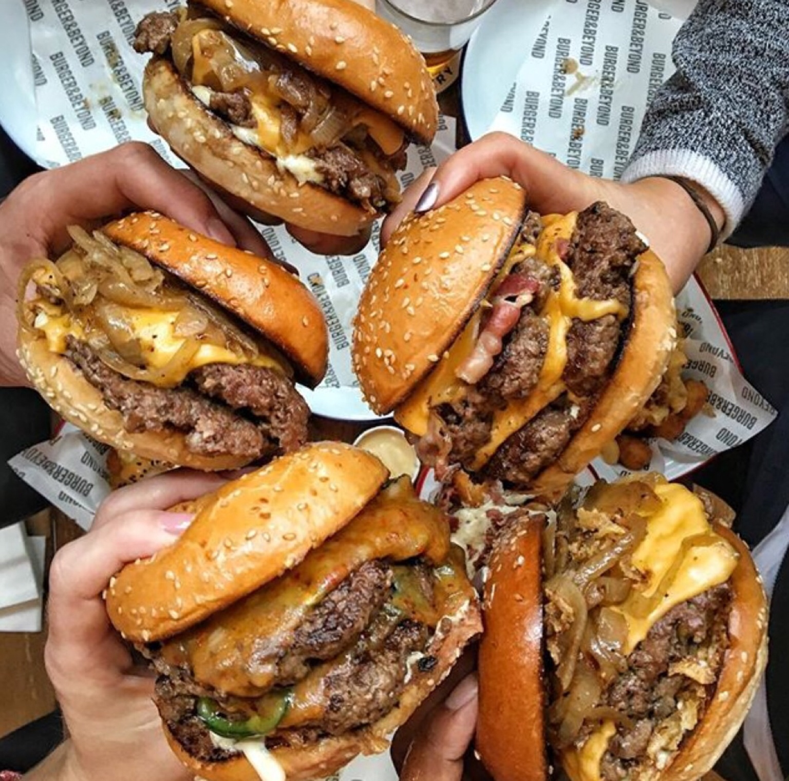

My Burger Recipe

Description
Thick or thin, made on the grill or stovetop, this is the best and easiest all-purpose recipe for perfect hamburger patties every time! These juicy, delicious homemade hamburgers are ready in less than 30 minutes and are a must-make for your next cookout.
Burger
Ingredients
- Ground Chuck, 80% lean: 900 g
- Onion Powder: 1 tbsp
- Garlic Powder: 0.5 tspn
- Salt: 1 tspn
- Ground Black Pepper: 1 tspn
- Burger Buns: 6 buns
- American Cheese: 12 Slices
Steps
- In a large bowl, mix ground beef, garlic powder, onion powder and pepper until just combined. Do not overmix, or your patties will be tough.
- Divide into six portions and form patties, without pressing too hard. They should be uniform in thickness. Smooth out any cracks using your fingers. Make these right before you grill them, so they stay at room temperature.
- Preheat your grill, grill pan or cast-iron skillet to high heat and add burger patties. If using a grill, cover with the lid.
- Cook until the crust that forms on the bottom of the burger releases it from the pan or grate — about 2 minutes. Gently test, but don't flip it until it gets to this point. When burgers lift up easily, flip, add two slices of cheese to each, close lid if using a grill, and cook on the other side for another 2-3 minutes for medium to medium rare.
- Remove burgers with a sturdy metal spatula and transfer to a plate. Allow to rest for several minutes, then transfer to buns.
- Garnish as desired and serve immediately.
- Full recipe can be found here.
Dressing
Ingredients
- Mayonnaise: 240 g
- Vinegar: 1 tspn
- Gherkin, diced: 1 pc
- Mustard: 2.5 tspn
- Garlic Powder: 2 tspn
- Onion Powder: 2 tspn
- Smoked Paprika: 2 tspn
- White Pepper: 1 tspn
- Diced Onions: Per preference
- Shredded Lettuce: Per preference
Steps
- Mix all the sauce ingredients and set aside.
- Add sauce on top of the burger patty.
- Add the diced onion and shredded lettuce on top at the end.
- Full recipe can be found here.
Back to the Homepage